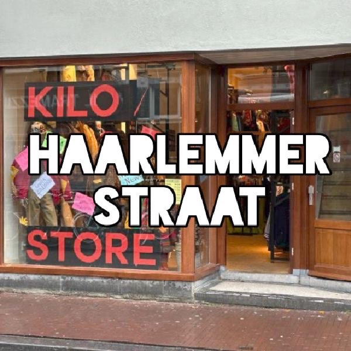
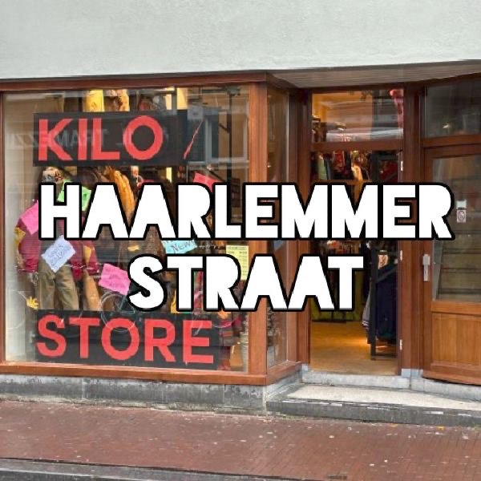

Locaties in Amsterdam
 

In Amsterdam zijn er in totaal 3 Kilo Stores. Omdat Amsterdam een aardig grote stad is, is er meer plek voor Vintage winkels en Kilo Stores. Op deze pagina zal ik uitleggen hoe je bij elke Kilo Store kan komen en zal ik uitleggen waar de winkels zelf zitten. Zonder veel verder te gaan met deze uitleg kunnen we nu beginnen over de drie winkels: Kiloshop Waterlooplein, Kiloshop de Pijp en Kiloshop Haarlemmerstraat.
Kiloshop Waterlooplein
Een plein waar je heel gezellig rond kan lopen en veel tweedehandswinkels hebt. Op Waterlooplein zelf kan je elke dag een markt vinden met tweedehands spullen. Hier houdt ik persoonlijk veel van want dan worden spullen niet onnodig weggegooid. Om hier te komen pak je vanaf Centraal Station een van de drie metro's naar de halte Waterlooplein. Hier stap je uit richting Waterlooplein en dan ben je er.

Kiloshop de Pijp
De grootste winkel van de drie. Aan de Albert Cuypstraat ligt Kiloshop de Pijp. Je komt hier door op Centraal Station de Noord-Zuid lijn te pakken richting Zuid. Hier moet je uitstappen bij de halte de Pijp en doorlopen naar de Albert Cuypstraat. Een welbekende straat in Amsterdam waar je heel gezellig over de markt kan lopen en hele leuke eettentjes hebt. Maar wij zijn hier voor de Kilostore. Deze winkel heeft een top ligplek en heeft ook enorm veel spullen. Dit is misschien wel de beste winkel van de drie om heen te gaan.

Kiloshop Haarlemmerstraat
En dan de nieuwste variant van de winkels: Kiloshop Haarlemmerstraat. Officieel het deze de Kilo Store maar het is van hetzelfde bedrijf als de andere twee, dus om het wat makkelijker te maken geef ik hem de naam van de winkelstraat waar hij in geplaatst is. Dit is de Haarlemmerstraat. Om hier te komen vanaf Centraal Station is best gemakkelijk. Het is namelijk een korte wandeling van een kwartiertje vanaf Centraal naar deze Kilo Store. Deze winkel is kleiner dan de andere twee maar er zijn gelukkig nog genoeg spullen te vinden.